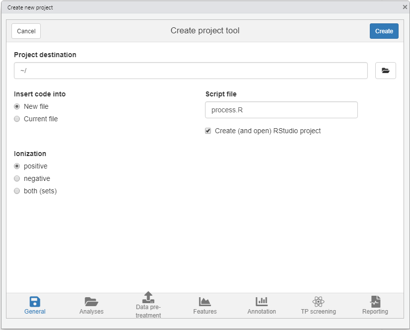

4.2 Preparations
4.2.1 Data pre-treatment
Prior to performing the actual non-target data processing workflow some preparations often need to be made. Often data has to be pre-treated, for instance, by converting it to an open format that is usable for subsequent workflow steps or to perform mass re-calibration. Some common functions are listed below.
| Task | Function | Algorithms | Supported file formats |
|---|---|---|---|
| Conversion | convertMSFiles() |
OpenMS, ProteoWizard, DataAnalysis | All common (algorithm dependent) |
| Advanced (e.g. spectral filtering) | convertMSFiles() |
ProteoWizard | All common |
| Mass re-calibration | recalibrarateDAFiles() |
DataAnalysis | Bruker |
The convertMSFiles() function supports conversion between many different file formats typically used in non-target analysis. Furthermore, other pre-treatment steps are available (e.g. centroiding, filtering) when the ProteoWizard algorithm is used. For an overview of these functionalities see the MsConvert documentation. Some examples:
# Converts a single mzXML file to mzML format
convertMSFiles("standard-1.mzXML", to = "mzML", algorithm = "openms")
# Converts all Thermo files with ProteoWizard (the default) in the analyses/raw
# directory and stores the mzML files in analyses/raw. Afterwards, only MS1
# spectra are retained.
convertMSFiles("analyses/raw", "analyses/mzml", from = "thermo",
centroid = "vendor", filters = "msLevel 1")NOTE Most algorithms further down the workflow require the mzML or mzXML file format and additionally require that mass peaks have been centroided. When using the ProteoWizard algorithm (the default), centroiding by vendor algorithms is generally recommended (i.e. by setting
centroid="vendor"as shown in the above example).
When Bruker MS data is used it can be automatically re-calibrated to improve its mass accuracy. Often this is preceeded by calling the setDAMethod() function to set a DataAnalysis method to all files in order to configure automatic re-calibration. The recalibrarateDAFiles() function performs the actual re-calibration. The getDACalibrationError() function can be used at anytime to request the current calibration error of each analysis. An example of these functions is shown below.
# anaInfo is a data.frame with information on analyses (see next section)
setDAMethod(anaInfo, "path/to/DAMethod.m") # configure Bruker files with given method that has automatic calibration setup
recalibrarateDAFiles(anaInfo) # trigger re-calibration for each analysis
getDACalibrationError(anaInfo) # get calibration error for each analysis (NOTE: also shown when previous function is finished)4.2.2 Analysis information
The final bits of preparation is constructing the information for the analyses that need to be processed. In patRoon this is referred to as the analysis information and often stored in a variable anaInfo (of course you are free to choose a different name!). The analysis information should be a data.frame with the following columns:
- path: the directory path of the file containing the analysis data
- analysis: the name of the analysis. This should be the file name without file extension.
- group: to which replicate group the analysis belongs. All analysis which are replicates of each other get the same name.
- blank: which replicate group should be used for blank subtraction.
- conc (optional, advanced) A numeric value describing the concentration or any other value for which the intensity in this sample may correlate, for instance, dilution factor, sampling time etc. This column is only required when you want to obtain quantitative information (e.g. concentrations) using the
as.data.table()method function (see?featureGroupsfor more information).
The generateAnalysisInfo() function can be used to (semi-)automatically generate a suitable data.frame that contains all the required information for a set of analysis. For, instance:
# Take example data from patRoonData package (triplicate solvent blank + triplicate standard)
generateAnalysisInfo(paths = patRoonData::exampleDataPath(),
groups = c(rep("solvent-pos", 3), rep("standard-pos", 3)),
blanks = "solvent-pos")#> path analysis group blank
#> 1 /usr/local/lib/R/site-library/patRoonData/extdata/pos solvent-pos-1 solvent-pos solvent-pos
#> 2 /usr/local/lib/R/site-library/patRoonData/extdata/pos solvent-pos-2 solvent-pos solvent-pos
#> 3 /usr/local/lib/R/site-library/patRoonData/extdata/pos solvent-pos-3 solvent-pos solvent-pos
#> 4 /usr/local/lib/R/site-library/patRoonData/extdata/pos standard-pos-1 standard-pos solvent-pos
#> 5 /usr/local/lib/R/site-library/patRoonData/extdata/pos standard-pos-2 standard-pos solvent-pos
#> 6 /usr/local/lib/R/site-library/patRoonData/extdata/pos standard-pos-3 standard-pos solvent-pos(Note that for the example data the patRoonData::exampleAnalysisInfo() function can also be used.)
Alternatively, the newProject() function discussed in the next section can be used to interactively construct this information.
4.2.3 Automatic project generation with newProject()
The previous sections already highlighted some steps that have to be performed prior to starting a new non-target analysis workflow: data pre-treatment and gathering information on the analysis. Most of the times you will put this and other R code a script file so you can recall what you have done before (i.e. reproducible research).
The newProject() function can be used to setup a new project. When you run this function it will launch a small tool (see screenshot below) where you can select your analyses and configure the various workflow steps which you want to execute (e.g. data pre-treatment, finding features, annotation etc). After setting everything up the function will generate a template script which can easily be edited afterwards. In addition, you have the option to create a new RStudio project, which is advantegeous as it neatly seperates your data processing work from the rest.

NOTE At the moment
newProject()only works with RStudio.